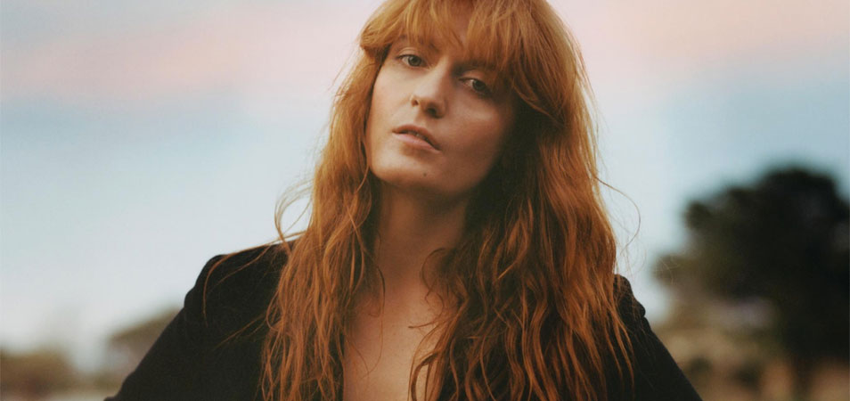

Florence + The Machine
FIND US ON SPOTIFY
Florence and the Machine (stylised as Florence + the Machine) are an English indie rock band that formed in London in 2007, consisting of vocalist Florence Welch, keyboardist Isabella Summers, guitarist Rob Ackroyd, harpist Tom Monger, and a collaboration of other musicians. The band's music received praise across the media, especially from the BBC, which played a large part in their rise to prominence by promoting Florence and the Machine as part of BBC Introducing. At the 2009 Brit Awards they received the Brit Awards "Critics' Choice" award. The band's music is renowned for its dramatic and eccentric production, as well as Welch's powerful vocal performances.
Read more about British Summer Time Festival 2 JULY 2016
Hyde Park
London